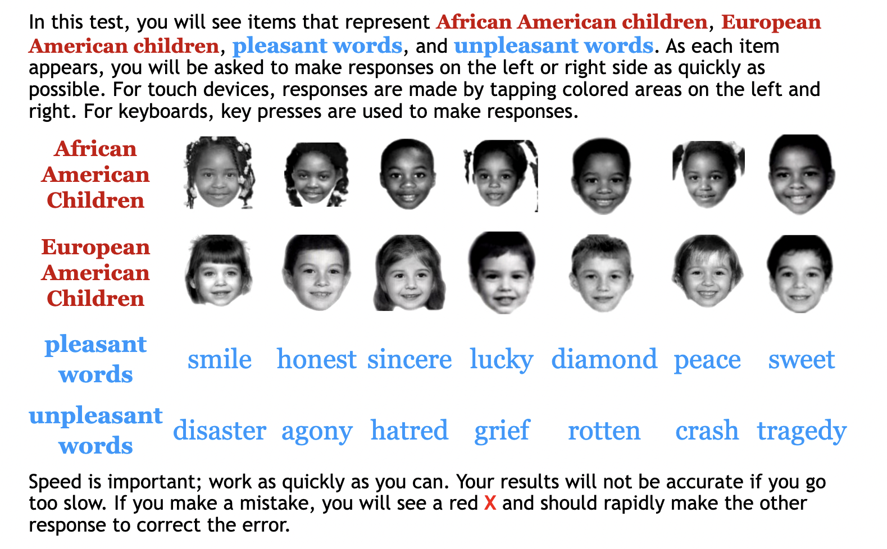

Do viewers actually see the thing they're looking at?
The picture below is the opening screen of one of Harvard’s “Project Implicit” Implicit Social Attitudes tests. This specific test was designed to capture participants’ underlying racial biases. Under normal testing conditions, if you are like the vast majority of the U.S. population, and especially if you are white or Asian American, you would likely have an easier time associating faces that you perceive as white with positive words and faces you perceive as Black with negative words.24 Whatever biases you have, you likely won’t notice their effect while looking at the pictures captured here. These illustrations don’t replicate the actual test conditions, after all. However, research suggests that neural pathways, developed over time and habituated in a white supremacist society, tend to replicate racism as data from photoreceptors in the eyes travel into and through the brain.

The opening screen of Project Implicit's Implicit Social Attitudes test, 2022.
Sighted children as young as three months old visually register racial markers. What they see affects their friendship choices and beliefs about people well before they enter school.25 Teaching evaluations, notoriously, are better at capturing students’ perceptions of their instructor’s race and gender than the instructor’s pedagogical performance.26 Both white college students and white police officers unconsciously look to and for Black faces when they have been primed to think about crime.27 These tendencies, typically termed “implicit bias,” are persistent and deeply seated, particularly among white people. They continue to appear even among white people who have worked to address their own racism, sexism, and other prejudices. Bias is embodied, and it is powerfully persistent in how viewers deal with the inevitable ambiguities of sight.
Of course, implicit bias isn’t only a matter of vision. Even so, tests for implicit bias, research on it, descriptions of it, and proposals for how to curb it invariably rely on sight as the primary trigger for implicit bias (even as scholars across multiple fields who study blindness and racial perception have complicated and contextualized the presumption that race is a visual feature).28 Tests purporting to identify implicit bias, like the one that we’ve represented here, typically ask test subjects to associate pictures of people—phenotypically racialized, gendered, disabled, or otherwise bodily marked—with positive or negative words. Explanations of how implicit bias happens also tend to emphasize visual sense: seeing a female- or racially-coded name and treating a CV more critically;29 viewing a picture of a white person or a person of Asian descent while listening to a lecture and making different judgements on intelligibility;30 watching a Black person reach into their pocket and registering risk rather than nonchalance. Likewise, many solutions aimed at limiting the effects of implicit bias—whether they work or not—tend to rely on controlling vision: performing arts auditions are done “blind;” training brings implicit bias “before the eyes” of search committees; data is gathered, visualized, and published to ensure accountability.31
The features that make implicit bias so powerful and so difficult to change are also built into the bodily mechanisms and processes of sight. This fact does not mean that implicit bias is inevitable or natural. It does, however, point our attention to the embodied ambiguities that are foundational sight itself and to the rhetoricity of what viewers perceive. When viewers look at the world around them, what they see emerges from an amalgamation of physiological, psychological, and socio-cultural factors. Jordynn Jack makes this point forcefully with regard to scientific vision, tracking the “pedagogy of sight” through which early microscope users learned to identify and interpret what they saw through the lens.32 But pedagogies of sight aren’t merely implicated in external visual technologies. Human vision as a whole is learned, and the world that is seen is seen through an enormous amount of physical, cognitive, and social processing.
Three screenshots of the first two blocks of tests, which ask the user to quicky classify words as either pleasant or unpleasant and faces as either African American or European American. Project Implicit, 2022.
Such processing begins early in life and sediments over time. “The brain develops in infancy certain assumptions about the world based on all the sensory information it receives,” Jaynes and Bretthorst write. “For example, nearer objects appear larger, have greater parallax, and occlude distant objects in the same line of sight; a straight line appears straight from whatever direction it is viewed, etc. … We hold tenaciously onto [these rules] because they have been successful in correlating many different experiences.”33 But we also sometimes hold onto those rules more tenaciously than we should. What is seen is not necessarily what is. Instead, it is the best approximation of what is based on a confluence of sensory input and previous experience. Frequently, the physical impressions left on the retina by the light reflecting off of objects could correlate to a wide variety of shapes, but experience tells us that some shapes are more probable than others.34 When forming the image seen, the brain selects what is most likely and presents it as what is. As Stone puts it, “experience is required to disambiguate images.”35 But experience is racialized, gendered, socialized, politicized, and filled with implicit and explicit bias.
Indeed, Stone continues, “the brain is forced to interpret an image that is fundamentally ambiguous by adding its own bias.”36 This recognition has spawned an almost alarming number of articles about visual perception that begin with the phrase “Believing is Seeing.” In an interview, Anthony Greenwald—psychologist and expert on implicit bias—explains just this point with regard to racial profiling. He notes, “When a black person does something that is open to alternative interpretations, like reaching into a pocket or a car’s glove compartment, many people—not just police officers—may think first that it’s possibly dangerous. But that wouldn’t happen in viewing a white person do exactly the same action.”37 Everyday movements—simple and straightforward, like reaching into a pocket—are socio-culturally and physio-cognitively ambiguous because of white supremacy. Seeing those movements requires the body and brain to draw on previous experience and activate biases. And so viewers—especially white viewers in the United States—see in the very same action a Black man reaching for a weapon and a white man pulling out his wallet. Likewise, in their research on visual associations between criminality and Blackness, Eberhard, Goff, Purdie, and Davies found that study participants were statistically quicker to recognize a weapon when primed with a Black face than with a white one and that biased connections between Blackness and criminality were bi-directional: when white study participants viewed images associated with criminality, they tended to notice Blackness and when primed with Black faces, they were more attentive to images of objects associated with crime.38 “Bidirectional associations operate as visual tuning devices by determining the perceptual relevance of stimuli in the physical environment. That is, given the processing capacity limitations that all perceivers face, these associations determine which information is important and worthy of attention and which is not. So, for example, the association of Blacks with crime renders crime objects relevant in the context of Black faces and Black faces relevant in the context of crime.”39 “Experience is required to disambiguate images,” Stone tells us, but the experience used to make vision work is as biased as sight itself.40
Three screenshots of later test blocks, which ask users to classify images and words into pairings. In the middle screen, "honest" needs to be identified as "African American or unpleasant" or "European American and pleasant." The third image reverses these associations, grouping "European American" with "unpleasant." Project Implicit, 2022.
If sight is never about perceiving exactly what is before the eyes but, rather, a matter of physical presumption, reduction, and interpretation, then the rhetorical functions of the visual extend all the way back to the cornea and lens. Implicit bias is not evidence of vision’s failure; instead, it is an indication of its endemic rhetoricity. Long-standing presumptions that viewers would see what was real if they simply looked hard enough or in the right ways or with enough anti-bias training are all eviscerated by the physiology, psychology, and sociology of sight itself. “Social imagination is not only affected by physical difference but it is active in creating and maintaining the perception of those differences,” Eberhardt et. al. explain.41 This recognition does not excuse or justify bias—implicit or otherwise. Instead, it asks scholars interested in visual rhetoric to treat all vision as infused with bias, all sight as always already rhetorical, and all rhetorical vision as situated, biased, embodied, and racialized.
The obligation for rhetoricians once we recognize sight itself as a rhetorical function of the visual is to attend to the patterns that predetermine what is seen. Stone writes, “Your knowledge alters how you see things. The things you see become part of your knowledge. Your knowledge alters how you see things. You can never see the things themselves.”42 Jaynes adds, “We will not relinquish successful hypotheses as long as they work; the only way to make one change these assumptions is to put one in a situation where they don’t work.”43 The biases built into sight itself are important (and important to rhetoricians) “not only because they can lead perceivers to make mistakes occasionally but also because they can guide, generally, how perceivers come to organize and structure the visual stimuli to which they are exposed.”44 Along the way, “stereotypic associations” driven by visual perception “help people to respond to their environment by rendering certain social groups and objects especially relevant and thus worthy of attention.”45 Sight itself, embodied, racialized, biased, is constitutive rhetoric.
Implicit bias, understood through a generative framework of sight itself, reminds us that perception not only cues judgment, it is judgment. Perception and judgment are simultaneous, interdependent bodily matters. “All that you see, all that you have seen, and everything you will ever see,” Stone writes, “is delivered to your brain as a stream of digital pulses whizzing along the fragile threads of salty, fluid-filled cables that are your nerve fibers.”46 Even when we treat vision as a sense that crucially involves the brain, we must also treat its fleshiness—soma, endoneurium, fiber. And what our bodies do in making, gathering, processing, and responding to those fleshy signals has enormous consequence for what we see—or don’t see—around us.